A Mask Tells Us
More Than a Face
Oscar Wilde
Start
Increasingly our identity is being compressed down to the numeric result of facial recognition algorithms. Thousands of micro-calculations performed almost instantly on the distance between the physical points on our faces (and Irises). The long floating point numbers, the result of these calculations, get recorded and re-tested and eventually become, to a certain degree, the proof of who we are. (atleast to the machines...)
{ "your_identity" : "erwewewrg8jwefhweuf8wehwr9" } Identity Mesh is an opportunity to discover, explore and even get creative with this same mathematically compressed identity produced by Face Mesh and facial recognition technologies. The source material of your creations will be your own face mesh coordinates.
Click next down below to get started...
Encode
We will need to have some input in order to generate the Face Mesh. You will need to have access to a webcam and click the 'Start Video' button. You will need to allow the browser to access your webcam signal the first time you turn on your webcam.
Once your video is enabled you will see a face mesh has been rendered on top of your live video. The mesh that is drawn over your face is a result of the FaceMesh machine learning algorithm. It takes the video stream and almost instantly predicts where the hundreds of points on your face will be in the next video frame. Then code draws the points (and the lines between) and renders it over the next frame of the live video stream. This is the same technology behind augmented reality systems where machine learning models predict the objects in the real world and overlay virtual objects that match up.
Below the video feed is a scatter chart of the 3D points on your face that are being extracted from your video stream. These landmarks are fed into a charting engine that plots each point as a vector (x,y,z). This chart is rerendered every 1/30 of a second to give it a real-time feel. You can click on the scatter chart and navigate around to explore your personal embedded landmarks.
Generate
Now that we have captured the landmarks of your face, we can generate a 3D model by clicking the 'Generate 3D Model' button. Try to get your face in the center of the image before you click the button. If you need to remake your model you can click the button again.
Once your model is generated you can navigate around the 3D space with your mouse or trackpad.
Create
Now we can get down to some creativity. Using a style transfer machine learning algorithm, you can make new machine styled portraits from your personally generated face mesh. On the left you can select three types of images to capture as the source of your portrait.
After selecting one of the options and clicking the 'Capture Portrait' button, you should see the portrait loaded underneath the buttons on the left.
Propagate
Here you will make an NFT and agree to share your images with the project... more to come
Project NFT Collection
 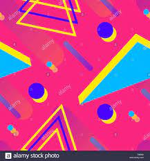 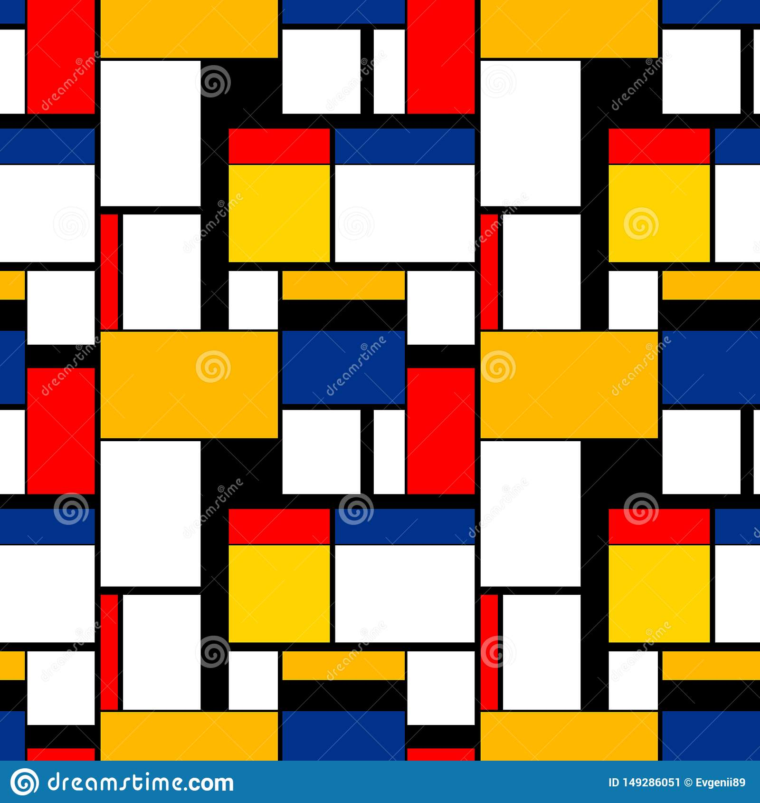 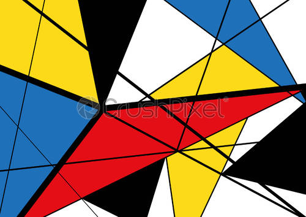 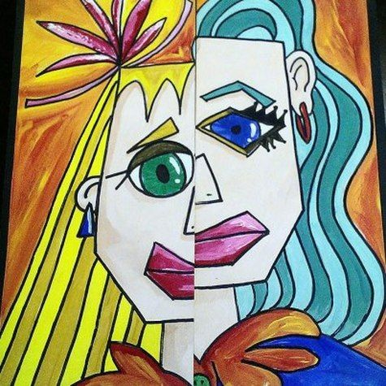 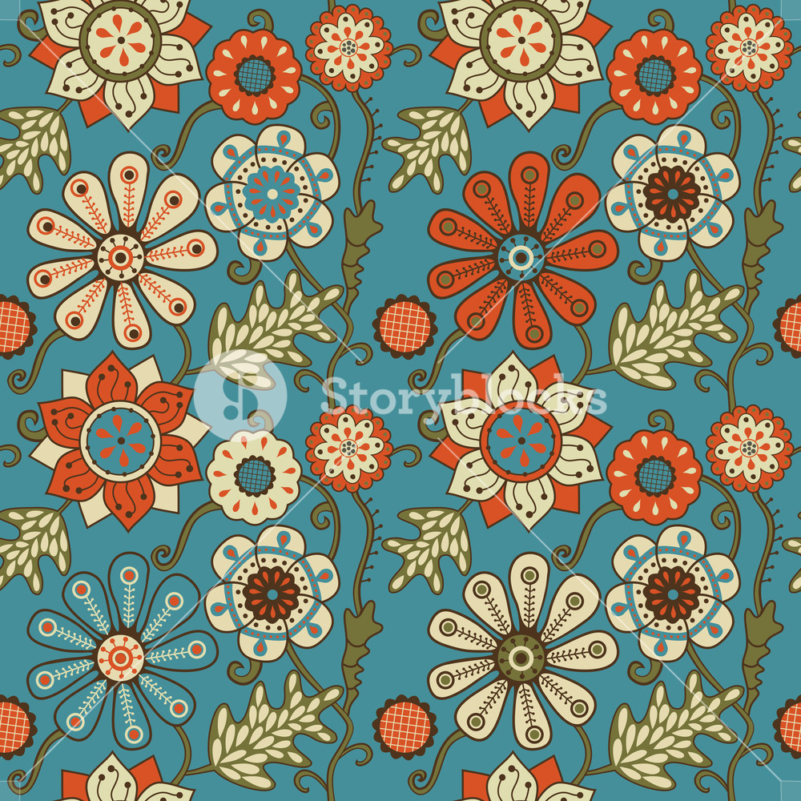 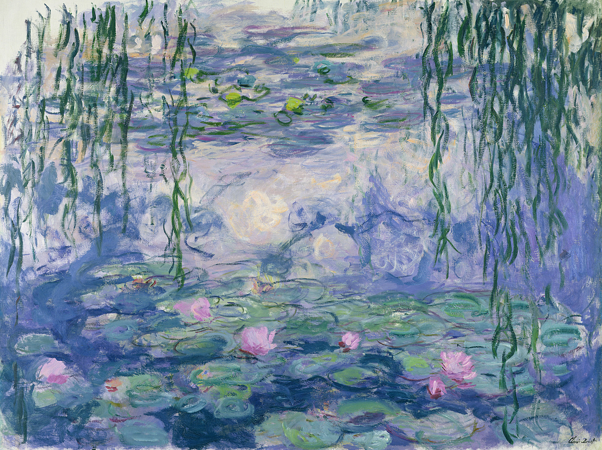
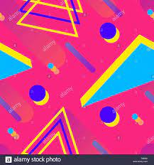 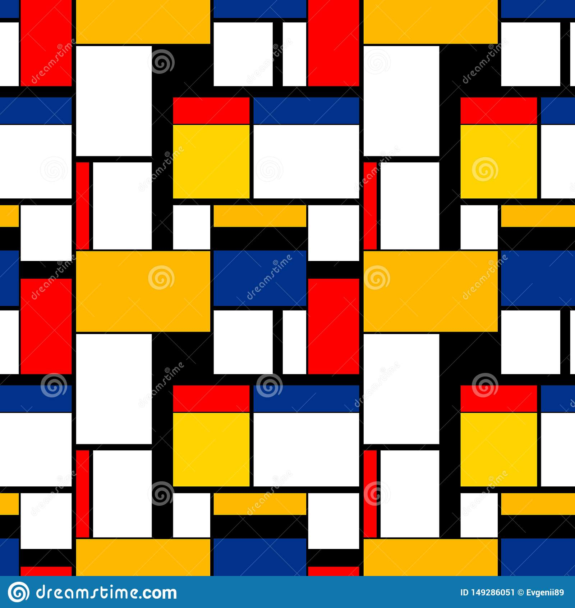 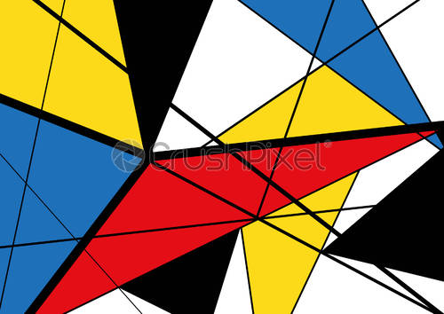 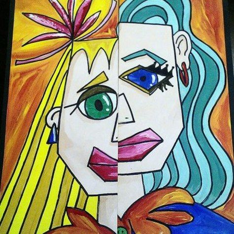 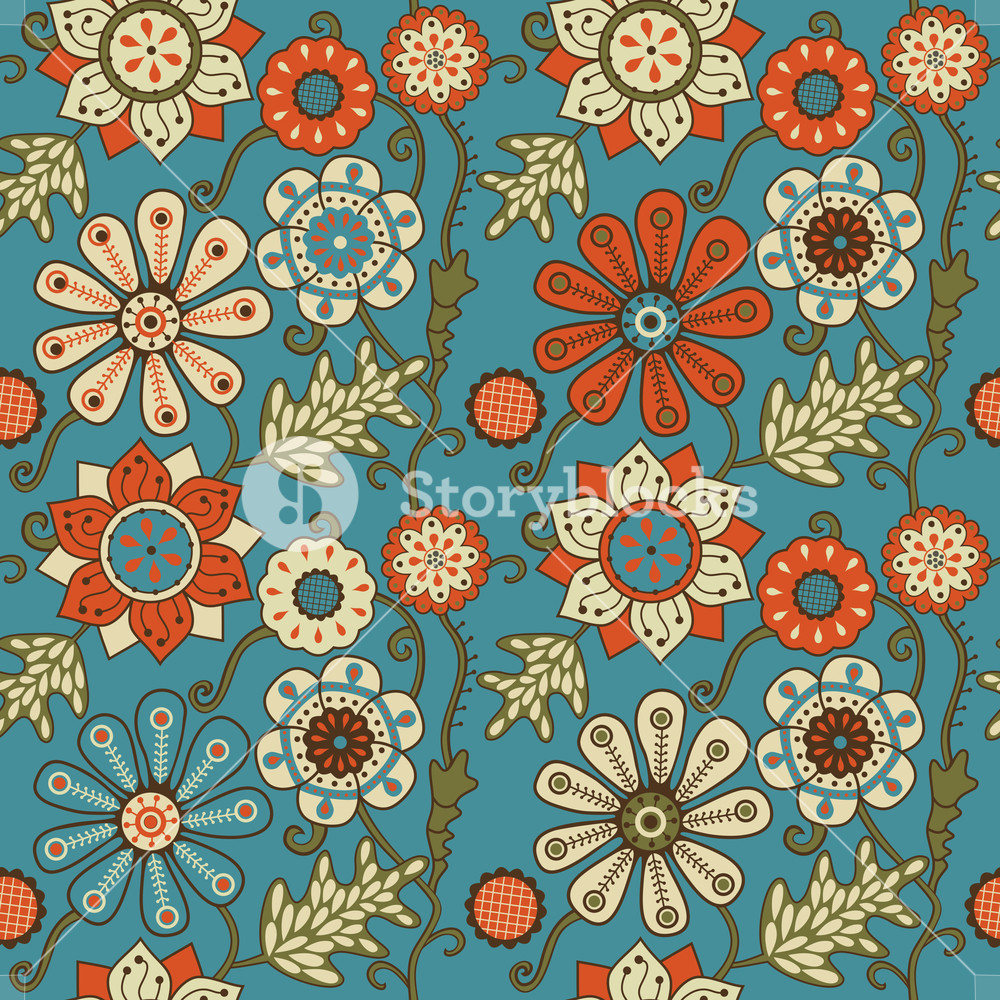 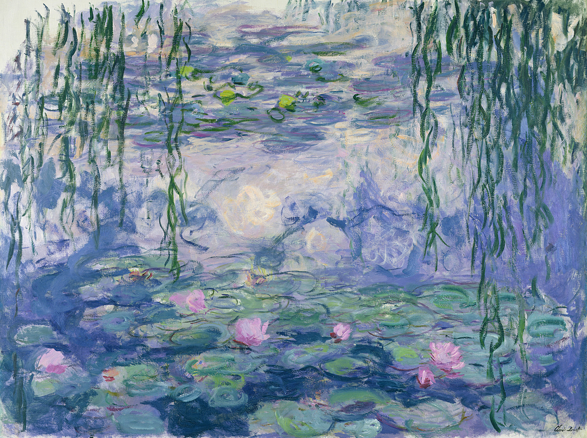